Backup & Restore
This guide will go over the following:
- how to setup regular backups using the Backup & Restore Plugin
- how to migrate your settings from Emby Server from one machine to another
- how to restore the same configuration to a new additional server
- how to restore your server to the last backed up state
- how to restore your server to a specific date backup of the databases
- how to copy playback state and favorites from one user account to another
There is also a section on manual backups.
Use the Backup & Restore Plugin
We recommend using the Backup & Restore plugin, which is designed to make this process really painless by doing the work for you. This plugin requires Emby Premiere and can be found in our plugin catalog.
The Backup & Restore plugin can help you backup and restore the following:
- Server configuration
- Users
- User data: play-states & favorites
- Plugin settings
- Playlists
- Live TV Schedule
This will not backup library contents. For metadata, there is an option to include metadata in the backups. Alternatively, configure your libraries to save nfo and image files alongside the media within the media folders and they would then be included in your own library content backups.
Note
If you have configured camera uploads and/or Live TV recordings, the default directories for these (data\camerauploads and data\livetv\recordings) are not part of the backup. You would need to back these up yourself and re-instate on the target new location.
Note
When migrating to a new machine, media paths will need to remain the same as on the original server.
Important
Backups created on older versions of Emby Server are not compatible and cannot be restored into Emby Server 4.8.
How to use the Backup & Restore Plugin
- Be sure your Emby Premiere key is properly installed and validated. Backup & Restore requires Emby Premiere .
- Install the plugin into your existing Emby Server.
- Make sure there are no pending updates to the plugin, requiring a server restart to be applied. Restart the Emby Server to apply the updates if the server dashboard indicates that.
- Launch Backup & Restore from within the Emby Server Advanced settings sidebar.
- Configure the Backup plugin by setting a folder to save the backups within.
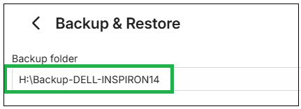
- Decide if you want to backup metadata. If you do include the metadata sub-folders, make sure there is sufficient disk space for the backups. Backups will take much longer to run.
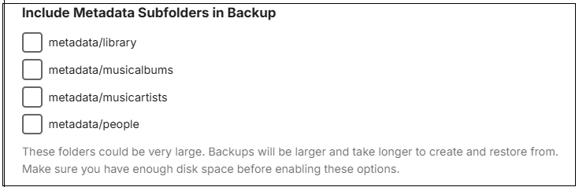
- If you wish to keep additional backups of the database files, you can specify that. By default, only one backup set of the databases is produced.
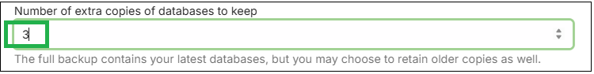
- Now click "Save".
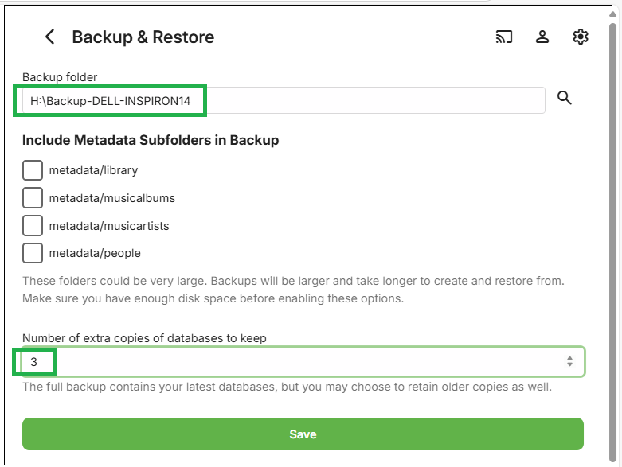
The next screenshot shows the initial setting before configuration:
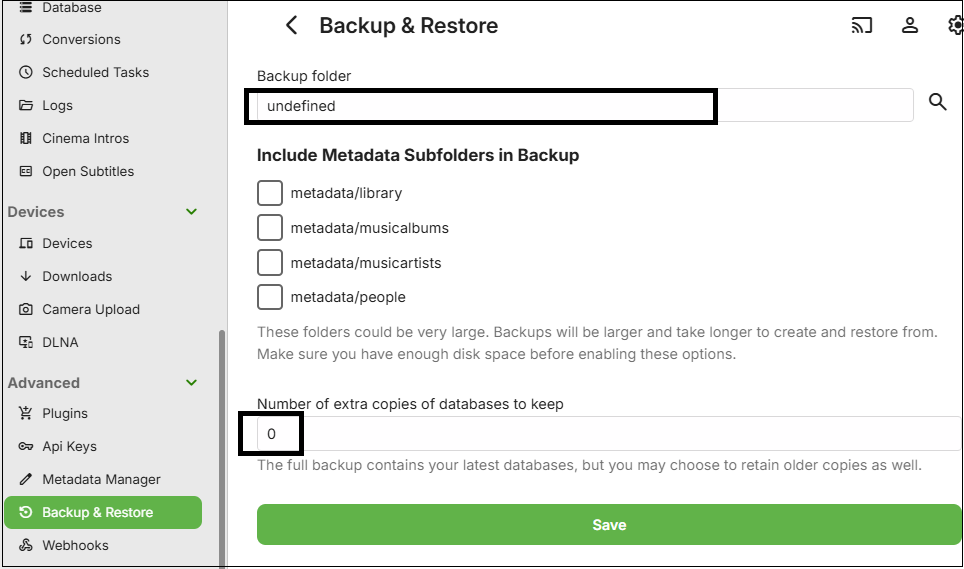
Important
You must set a path for backups by changing the default "undefined" path setting to an actual path and saving that for the backups to start. Please ensure that the system user account that Emby Server runs in, has full permissions to this backups path. Paths must be absolute and not relative.
Note
If running Emby Server on Windows as a Windows Service, the backup path needs to be to a local drive or using UNC path if it is an external shared network drive. This is because Mapped Network Drives would not be available to a Windows Service. e.g. Use "\\server-name\share-name\backups-folder-name" as path and not a mapped network drive.
- By default, the backup process will run once a day soon after midnight. This can be changed in Scheduled Tasks settings.
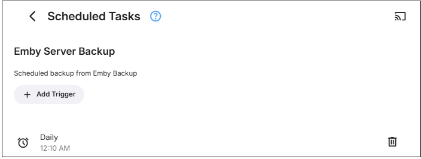
- In Scheduled Tasks, you can manually run the schedule for "Emby Server Backup" after backups setup, if you wish to confirm that the backups succeed, rather than wait for the scheduled task to run later on.
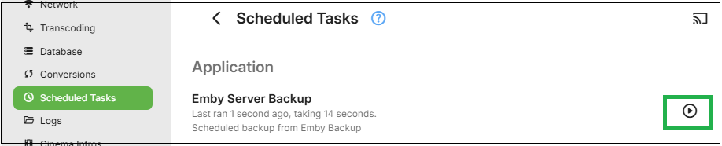
Note
Keep a record of what plugins you add to the Emby Server, as whilst the backup operation does save the configurations of all installed plugins, any added plugins will need to be manually installed after the restore of the server. The Plugins should only be added after you have confirmed that the restored Emby Server is operational.
How to restore using the Backup & Restore Plugin
Restoring to a new server installation
- Ensure all media is in place on the new server in the same media filesystem paths as before. Any that were within the emby server program data eg the default Camera Upload folder and Live TV Recordings folders need to be copied to within the program data path for the new server.
- Add the Emby Premiere key and install the plugin on your new Emby Server installation. You may need to restart the server to complete installing updates for the Backup & Restore plugin.
- Launch the Backup & Restore plugin on the new server and configure it to have the backup path set to where the backups are. It needs to be the same parent folder that contains your backups and then save this path.
- If the path is correct, after clicking "Save" you will see the available backup to restore from.
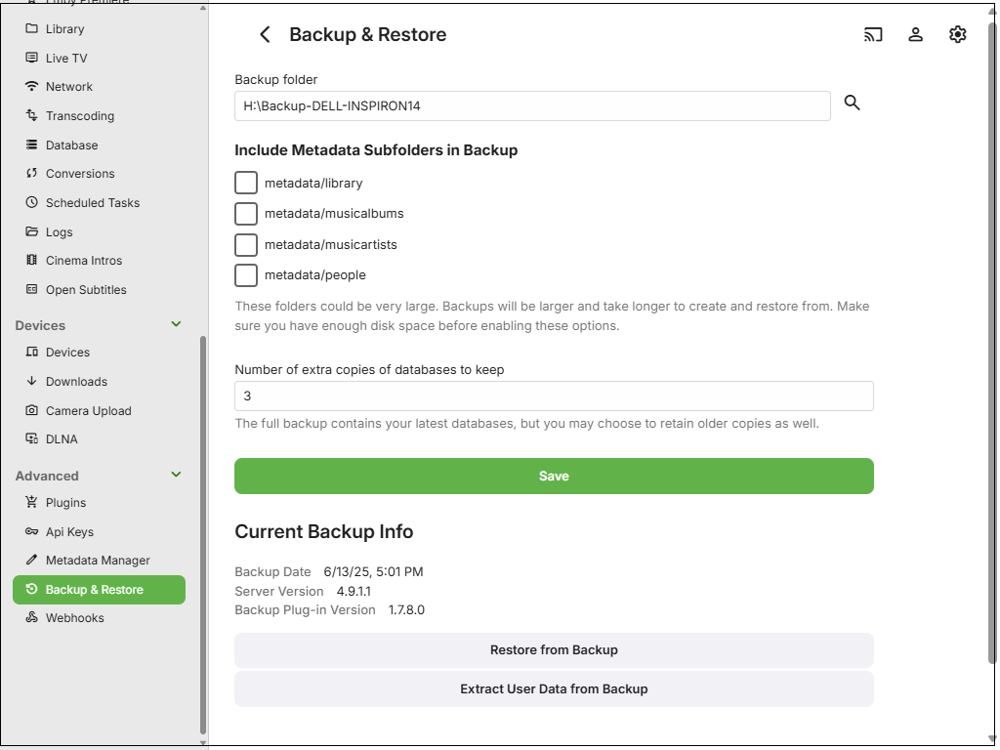
Note
if previous backups do not show up correctly, check to make sure you have selected the parent folder and not the specific folder holding the backups.
- Click on "Restore from Backup" and in the Restore Options drop-down, select "embyserver-backup-full".
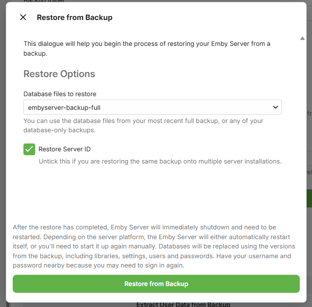
- If this new server is a replacement for the old server, ensure you have the "Restore Server ID" ticked.
- If this new server is an additional server, that will be run alongside the server from which the backup was produced, then you must un-tick the "Restore Server ID" option, and if using Emby Connect, re-link local accounts to Emby Connect after the restore. See Emby Connect for Users.
- Click on "Restore from Backup"
- You will be prompted to confirm.
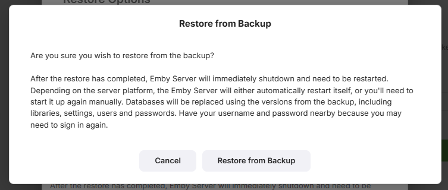
- When the restore completes, Emby Server will automatically restart.
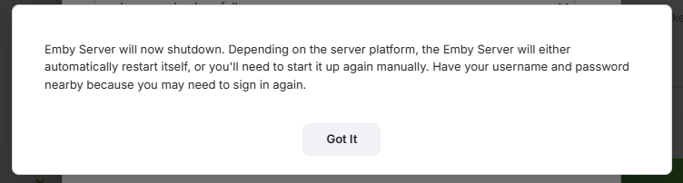
- Make sure you close all previous browser sessions accessing this new server, as they would be using the old pre-restore credentials.
Note
It is advisable that you do defer installing the additional plugins until you confirm that the restored server is functioning with no new issues after the restore.
- With the Emby Server operational and all media accessible, you can now install any Plugins that you had added to the server that is being restored. The configuration files for the plugins are automatically restored, so once the plugins are added and the server restarted to complete the plugins installation, the plugin configuration files should get picked up.
Note
Be aware that some plugins may have additional data eg a database that would need to be copied over manually or an application that may need to be installed. Please carefully check the requirements for each plugin.
- If you have Live TV configured, go to server settings / Live TV and perform a "Refresh Guide Data"
How to Restore an earlier backup of the databases
- If you have specified that the backups keep a number of extra backup copies of the databases, you can use Restore to revert to an earlier backup of the databases. The restore will use the last full backup data but the databases will be from the backup date you select.
- Launch Backup & Restore from within the Emby Server Advanced settings sidebar.
- Click on "Restore from Backup" and in the Restore Options section, open the drop-down to see the list of previous databases copies.
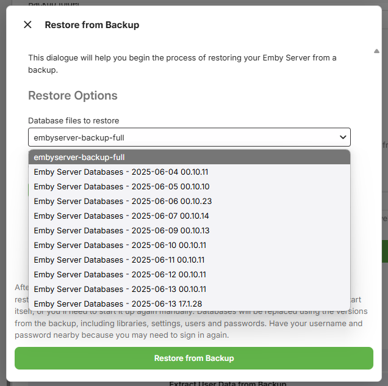
- Select the backup for the day/time you wish to go back to.
- As this restore is not for a new additional server, keep the "Restore Server ID" ticked
- Click on "Restore from Backup"
- You will be prompted to confirm. When the restore completes, Emby Server will automatically restart.
- Make sure you close all previous browser sessions accessing this new server, as credentials may change.
How to use Restore to copy media playback state and favorites
You can use Backup and Restore to copy the playback state and favorites information to a different Emby user account.
- Launch Backup & Restore from within the Emby Server Advanced settings sidebar.
- Click on "Extract User Data from Backup"
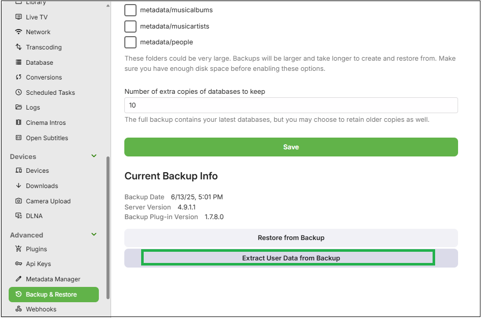
- On the next screen, tick the original user accounts that are in the backup that you wish to copy the data from.
- For each of the selected original user accounts that are in the backup, select from the dropdown the local user account to copy the playbacks state and favorites to.
In the example below, we are copying playbacks state and favorites from user My-Admin-User to user MyNewAdmin.
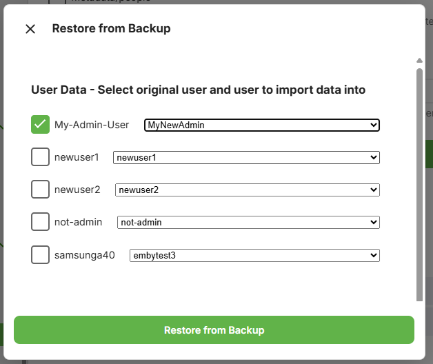
- Having made the selection, now click "Restore from Backup"
and as per other restores, you will be asked to confirm.
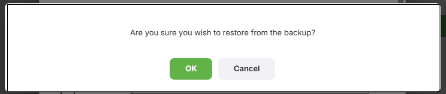
If you prefer to backup manually, read on....
How to Backup Manually
The following instructions will detail how to manually backup or migrate an Emby Server installation.
Important
It is important that the Emby Server process is not running when files are backed up.
Locate Emby's program data folder
The path to the Emby Server Data Folder can be found in your Emby Server Dashboard by clicking the 3-dot menu next to the server name.
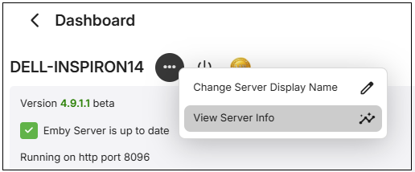
Click the view server info menu choice
The following shows different examples for a number of platforms
Windows
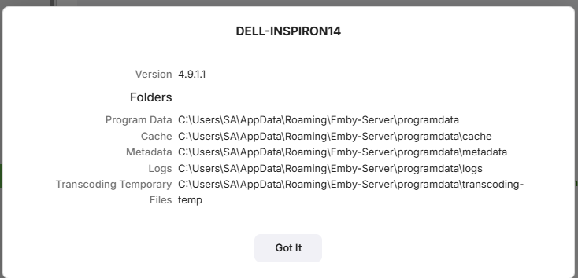
Synology NAS
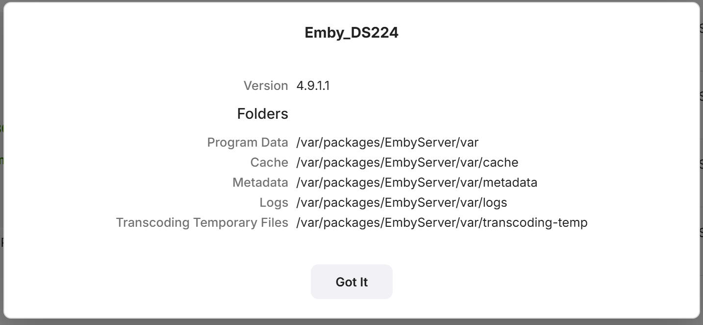
Linux
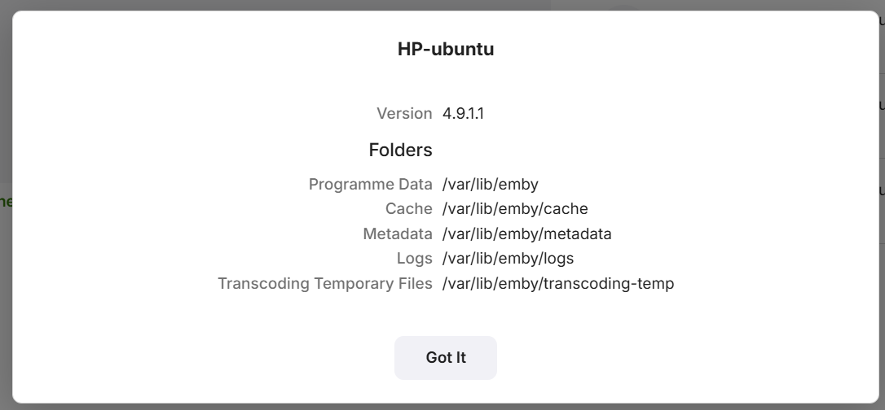
Western Digital NAS
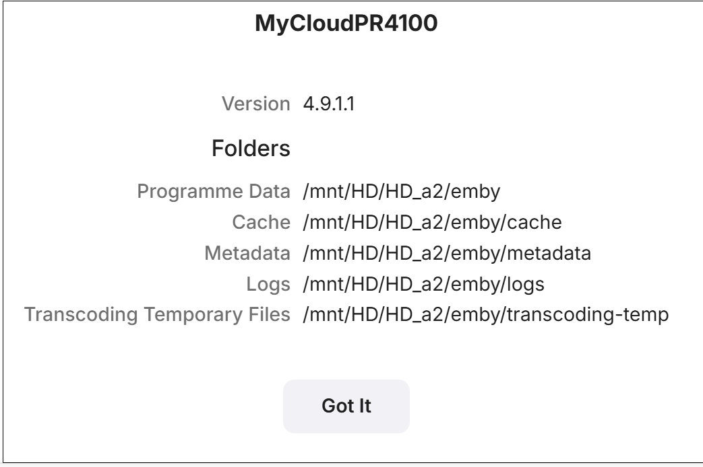
The top path entry shows the parent location for Emby Server app data.
From now on this guide will refer to this path as /ProgramData. Simply backup everything in and below /ProgramData using any tool you wish or copy all files to a backup location. Make sure Emby Server is shutdown and does not show as running in the processes list, activity monitor on Mac, Task Manager on windows. For NAS devices, use the NAS dashboard to stop the Emby Server process.
Migrate to a new server
If you are migrating to a different operating system care should be care should be used to make sure you match up directories properly during the restore as the directory names and locations could be different.
- Get a good backup as explained above from you existing system (old).
- Install the same version number of Emby Server to the computer about to become your (new) system.
- After running through the setup wizard, shut down Emby Server
- If space allows, make a copy of the installation to another location on disk. This is only needed if you need to check/fix access rights.
- Restore the backup from your old machine right over the current installation on the new system.
- Compare each folder's access rights on the new machine restore to the fresh installation copy.
- Adjust access rights as needed so they match
- Start Emby Server.
- Make any adjustments to file location you may need to make.
- Run a full library scan on all libraries.
- Review log files for any errors generated.
After the Scan
If your library was configured with identical paths as the old setup then user data will generally be preserved as well as user library permissions. You may still want to review the library access for each user to ensure their channel and folder access is restricted as desired.